Introducción y Vista General
Bienvenido al manual interactivo de RACK Designer. Esta herramienta gráfica está diseñada para simplificar el diseño, documentación e inventario de Centros de Datos.
Tip: Puedes alternar entre el "Modo Oscuro" y "Modo Claro" usando el menú principal ☰ en la esquina superior derecha de la aplicación.


Áreas de Trabajo


Adaptabilidad a Pantallas
RACK Designer cuenta con soporte completo para pantallas táctiles y dispositivos móviles. En pantallas de escritorio, el diseño se expande lateralmente. En dispositivos móviles, la interfaz se adapta automáticamente apilando los gabinetes verticalmente y ocultando el catálogo lateral bajo el menú hamburguesa ☰ para maximizar el lienzo de trabajo, logrando una vista vertical optimizada.

Infraestructura (Salas y Gabinetes)
Gestión de Salas
Todo el equipo debe organizarse dentro de una "Sala". Las salas contienen "Gabinetes" (Racks) donde atornillarás los servidores.

Interfaz Móvil: En dispositivos móviles, el formulario se reestructura automáticamente para pantallas pequeñas, asegurando que los campos de texto se mantengan accesibles mediante teclado en pantalla y sin desbordamientos.

Crear un Gabinete
✨ Atajos Rápidos: Cuando una sala no contiene ningún gabinete (estado vacío), el sistema mostrará botones interactivos en el centro del lienzo para que puedas agregar tu primer Rack o Equipo de Piso instantáneamente con un solo clic.
Haciendo clic derecho en el lienzo azul, podrás crear un nuevo Rack. Deberás asignarle un Nombre, una altura en Unidades (U) (típicamente 42U o 48U) y un Color distintivo.


Como se muestra en la figura, cada unidad (U) puede alojar un equipo frontal y, de forma independiente, un equipo trasero (como regletas eléctricas o PDUs) sin chocar entre sí.
Opciones del Gabinete (Menú Contextual)
Cada Gabinete posee un botón de opciones (⋮) en su cabecera superior. Al hacer clic, se despliega un menú contextual flotante que agrupa todas las acciones de administración del rack:
Gestión de Equipos
Métodos de Instalación
⚡ Agregar Equipo de la barra inferior para usar el asistente de instalación paso a paso sin arrastrar.

Catálogo Móvil: En dispositivos móviles, al pulsar el menú hamburguesa, el sistema despliega un panel lateral flotante (off-canvas) con el catálogo y estadísticas optimizadas para arrastre y tap táctil.


Módulos de Configuración
Al editar un equipo, verás casillas de verificación (Checkboxes) para habilitar configuraciones avanzadas. Si un equipo es "pasivo" (ej. un patch panel), no necesitas habilitar estos módulos.
Propiedades y Ficha Técnica
Haciendo doble clic en un equipo, se abrirá su ficha técnica. Aquí puedes documentar:

Configuración Móvil: En pantallas de smartphones, el formulario se reestructura visualmente en una grilla compacta de dos columnas con casillas de activación adaptadas a gestos táctiles amplios.

Topología y Redes
La vista topológica permite conectar los equipos mediante cables lógicos. Los equipos se renderizan como Nodos interconectados.

En dispositivos móviles, el sistema auto-escala el nivel de zoom inicial al 20% y agrupa las salas de manera que los enlaces (fibra/ethernet) sean legibles rápidamente. Además, el diálogo de conexión se adapta al ancho de pantalla:


Para conectar dos equipos, simplemente haz doble clic en un nodo de origen y luego selecciona el nodo de destino. Esto abrirá el menú de configuración de enlace.

A medida que diseñes tu red, podrás visualizar la arquitectura completa (Full-Screen) donde se aprecian las rutas de cada cable. El color de las líneas representará los enlaces que has creado.

Puedes utilizar la rueda del ratón o los controles de zoom (🔍) en la barra superior para acercarte (Zoom In) y observar en detalle los nodos y las rutas de cableado, incluyendo las IPs de los equipos principales.

Tabla de Conexiones
Alternando la pestaña del panel inferior a Conexiones, puedes acceder a una bitácora tabular de todos los enlaces que has creado. Aquí verás el detalle de los puertos y colores asignados, con la posibilidad de editarlos o eliminarlos masivamente.

Para mayor comodidad durante auditorías extensas, puedes hacer clic en el botón Expandir de la tabla para ocultar el lienzo y ver la bitácora en pantalla completa.

Respaldos y Exportación
Es fundamental respaldar el trabajo periódicamente y utilizar la tabla de inventario para auditorías.

Inventario en Móvil: En smartphones, la tabla se adapta mediante un contenedor deslizable verticalmente (drawer) que puede arrastrarse hacia arriba, con soporte para scroll horizontal que facilita la lectura de todas las columnas.

⬇ Excel o ⬇ CSV para auditar los equipos.
📷 PNG en la barra superior y selecciona el rack a exportar para generar una instantánea del armario. Si hay equipos ubicados directamente en la sala, aparecerá la opción independiente para exportar "Equipos de Piso".
Menú en Móvil: Las opciones globales de importación, exportación y guardado se ubican en el menú hamburguesa adaptado a un panel táctil desplegable.


Estructura y Arquitectura del Sistema
RACK Designer 2 utiliza un patrón de arquitectura reactiva de flujo unidireccional en JavaScript nativo (Vanilla JS). Esto elimina la necesidad de frameworks pesados, manteniendo la aplicación extremadamente veloz, ligera y fácil de mantener.

Componentes del Flujo
js/ui/ escriben directamente los nuevos valores en el estado central store.state o invocan métodos de acción en el almacén de datos.
store.js) y Sistema de Archivos
Implementado mediante un objeto Proxy ES6. Este Proxy intercepta cualquier escritura de propiedades en el estado, realiza automáticamente la persistencia dual guardando los datos en localStorage y nativamente mediante la File System Access API (fileManager.js), y finalmente emite un evento global de tipo 'change'.
main.js)
Actúa como el controlador o "Dispatcher". Está suscrito al evento de cambio del store. Al recibir el evento 'change', evalúa qué parte de los datos mutó y ejecuta las llamadas selectivas a las funciones de renderizado de la UI para mantener el DOM perfectamente sincronizado con el estado actual.
js/ui/)
Componentes especializados e independientes (como rack.js para la grilla física, topology.js para los enlaces SVG de red o tables.js para el inventario tabular) que se encargan de leer el estado actualizado y construir la estructura DOM correspondiente en index.html.
Nota técnica: Toda la persistencia local de la aplicación funciona de manera síncrona en cada edición gracias al Proxy. Esto asegura que si el usuario refresca el navegador o pierde la conexión, no perderá ningún progreso del diseño de su Centro de Datos.
Inicialización y Carga de Datos
El ciclo de arranque de la aplicación combina la persistencia local con una estrategia de carga dinámica (lazy loading):
store.js, el sistema verifica inmediatamente el localStorage del navegador. Si encuentra un proyecto guardado, lo restaura en la memoria. Si la memoria está vacía (primer uso), el sistema no bloquea el arranque cargando una maqueta gigante; en su lugar, genera dinámicamente un estado en blanco básico (una sola sala vacía), permitiendo que el lienzo y la aplicación carguen de forma instantánea.
demoData.js) se ha desacoplado del flujo de arranque inicial. En lugar de ejecutarse al abrir index.html, este pesado archivo se inyecta en el DOM mediante la creación dinámica de una etiqueta <script> únicamente cuando el usuario hace clic en el botón "✨ Cargar demos" desde el menú. Esto previene tiempos de bloqueo, economiza memoria y asegura que el trabajo en progreso del usuario no sea sobreescrito accidentalmente por las demostraciones.
El Almacén Reactivo (js/store.js)
El almacén central reactivo es el encargado de interceptar las mutaciones, resguardar copias de seguridad de forma instantánea en el disco local y gestionar el historial de deshacer/rehacer:
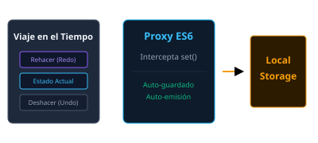
set()), actuando como una barrera de control.
localStorage y utiliza de forma nativa la File System Access API para reescribir un archivo .json del sistema de escritorio, permitiendo respaldos directos sin descargar repetidamente copias.
'change' para notificar al orquestador.
El Flujo de Renderizado (main.js y Módulos UI)
Este bloque del diagrama detalla cómo se realiza el enlace dinámico entre la lógica del controlador global y las vistas modulares del DOM:
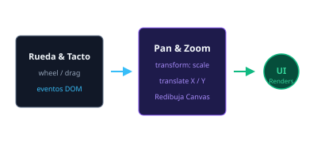
renderAll(event) recibe el evento de cambio y decide a quién llamar según el módulo afectado. Por ejemplo, si el cambio proviene de un dispositivo, llama selectivamente a actualizar el inventario y la vista física, pero evita recalcular la topología o recrear las salas innecesariamente, lo que ahorra tiempo de cómputo.
js/ui/ son vistas desacopladas. Al ser invocados, regeneran la plantilla literal HTML correspondiente y actualizan el fragmento del DOM correspondiente (como div#view-physical o la tabla de inventario), y reasocian los listeners de eventos para mantener la interactividad.
El Orquestador Central (js/main.js)
El orquestador central (o controlador) es el bloque principal que centraliza las escuchas de interacciones del usuario y distribuye el renderizado reactivo a través de la aplicación:
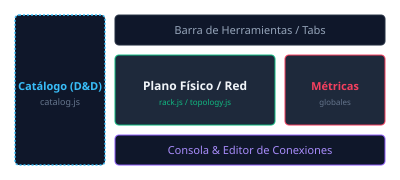
initGlobalEvents() vincula directamente los eventos del DOM relacionados con interacciones generales del usuario que no alteran el estado de forma reactiva (zoom de topología, paneo del canvas, alternado de modo Claro/Oscuro, etc.).
renderAll(event), actúa como un despachador que recibe el evento `'change'` del store. Al analizar el metadato event.source, decide qué modulo de la UI actualizar, garantizando un renderizado eficiente y local en lugar de realizar cargas globales costosas.
Los Lienzos de Trabajo (Canvas vs DOM)
La aplicación cuenta con dos modalidades gráficas con representaciones de memoria y tecnologías de renderizado completamente diferentes:
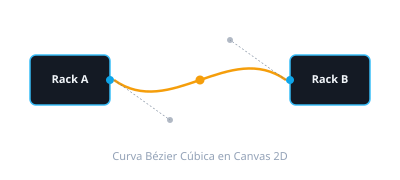
<div id="view-physical">. Utiliza elementos HTML nativos anidados (.rack-wrapper, .rack-flipper, .rack-slot) controlados por la hoja de estilos CSS general. Responde directamente a la API nativa de Drag & Drop de HTML5 para calcular en qué unidad (U) cae un elemento. Es una vista estática y estructurada de fácil acceso.
<canvas id="topology-canvas">. Refactorizada internamente utilizando un patrón Modelo-Vista-Controlador (MVC) en el directorio js/ui/topology/. Archivos como TopologyState.js administran las ubicaciones, mientras que TopologyRenderer.js dibuja las formas. Toda la interactividad (arrastrar salas, hacer clic) está abstraída y conectada matemáticamente al flujo global.
Estructura de Directorios
A continuación se presenta el mapa visual de la distribución física de archivos y carpetas del proyecto:
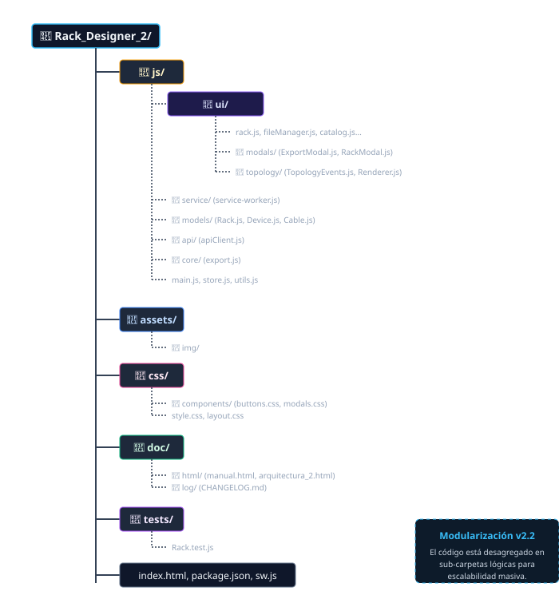
Diseño Atómico (Atomic Design)
La arquitectura de componentes de RACK Designer 2 se organiza bajo los principios de Atomic Design, estructurando de manera jerárquica las interfaces desde los bloques más elementales hasta las páginas funcionales conectadas a datos de red en tiempo real.
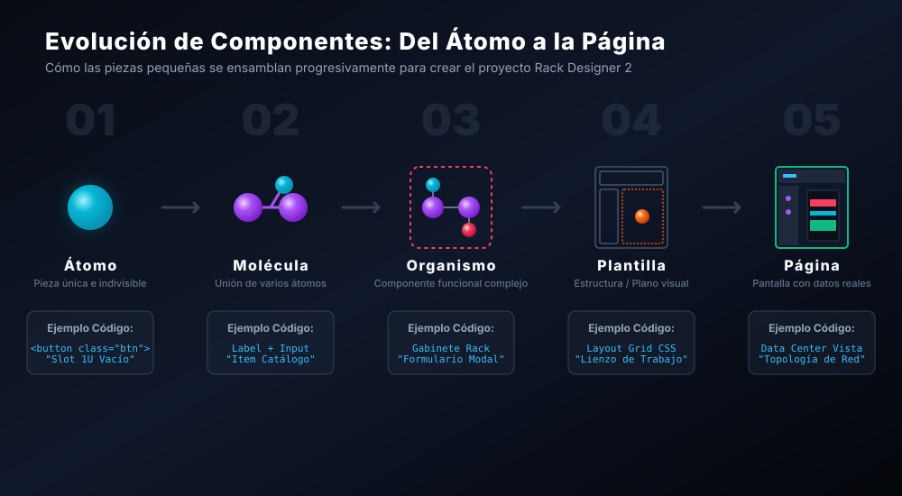
Categorización de Componentes
.u-slot), los botones de zoom (+/-), los íconos de estado SVG (⚡) y las variables CSS de la paleta de colores.
⋮) y las pestañas selectoras de salas.
store.js. Ejemplos son el lienzo del Data Center con sus equipos de prueba atornillados y el mapa de red activo en la vista de topología con las IPs y switches reales conectados.
Arquitectura Visual (Layout Map)
Para facilitar la comprensión del sistema, a continuación se presenta el mapa estructural (Layout Map) de la aplicación, el cual divide la interfaz en zonas lógicas para su navegación y gestión.
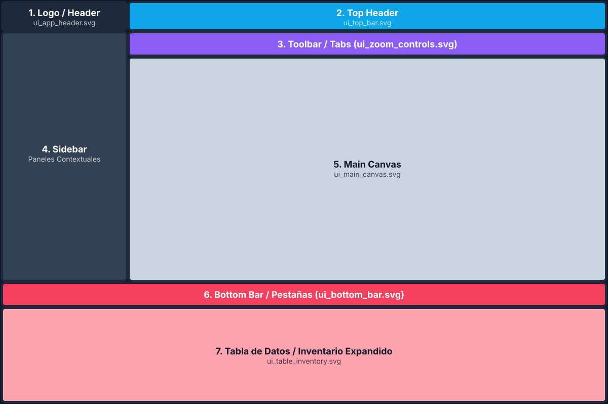
Aquí tienes la descripción de cada área y su propósito:
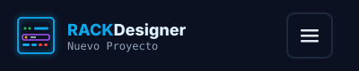
Función: Es el ancla de marca y navegación principal. Contiene el isotipo iluminado, el nombre de la app ("RACK Designer"), el estado o nombre del archivo actual ("Nuevo Proyecto") y el botón de menú tipo hamburguesa para acceder a configuraciones globales, guardar, abrir o exportar el proyecto.
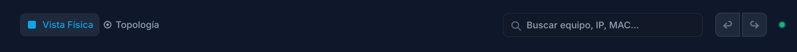
Función: Contiene los controles de estado global y búsqueda. Aquí el usuario cambia el modo principal de la aplicación (alternando entre "Vista Física" y "Topología"). También aloja los botones de Deshacer/Rehacer, el indicador de estado del sistema (el punto verde) y la barra de búsqueda global.
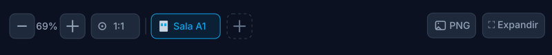
Función: Actúa como una barra de herramientas flotante pegada al lienzo. Su objetivo exclusivo es manipular la cámara y el entorno visual. Incluye controles de Zoom, el selector de la ubicación o sala actual, y botones para exportar el lienzo a imagen o ponerlo en pantalla completa.
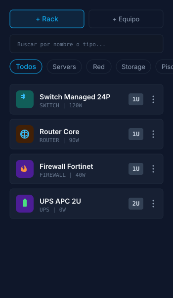
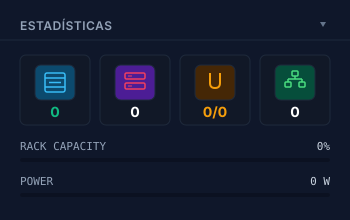
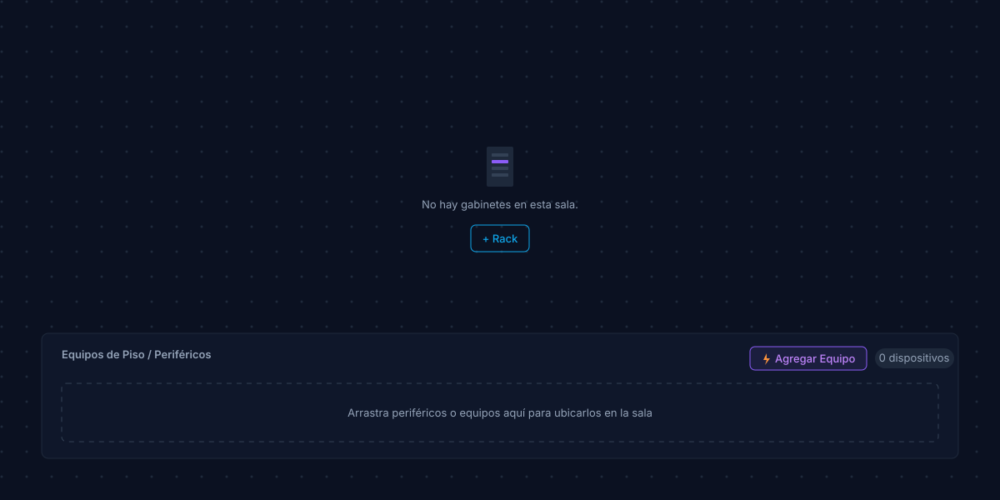
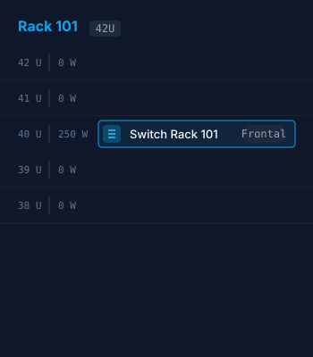
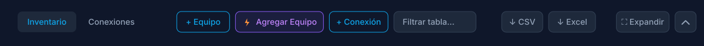
Función: Muestra pestañas rápidas ("Inventario", "Conexiones"), accesos directos para agregar equipos ("⚡ Agregar Equipo"), botones de exportación ("↓ CSV", "↓ Excel") y el control para expandir la tabla completa (▲).
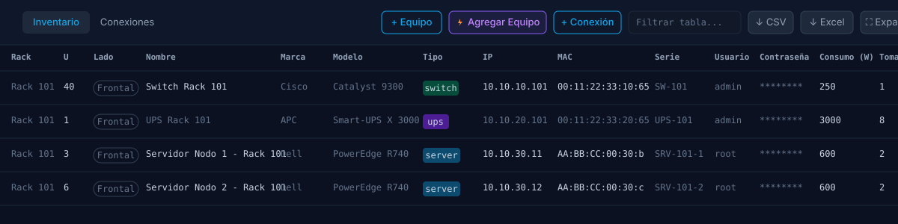
Función: Es el centro de gestión de datos crudos. Cuando se expande, revela la tabla completa permitiendo auditar y editar masivamente características avanzadas como marcas, modelos, IPs, MACs, contraseñas y consumo eléctrico de todos los equipos del proyecto.